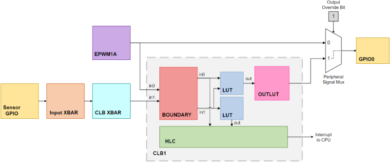
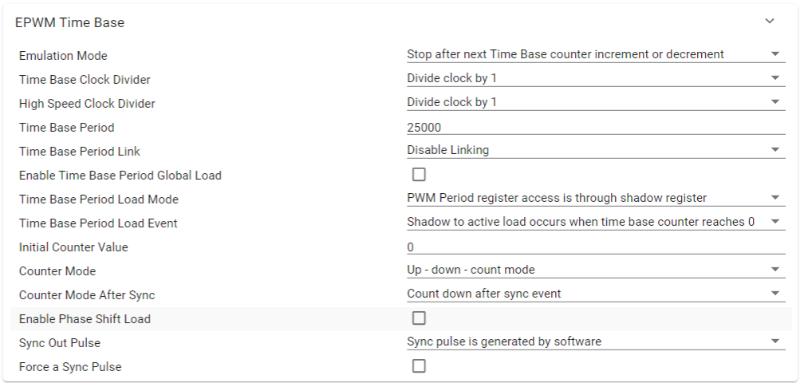
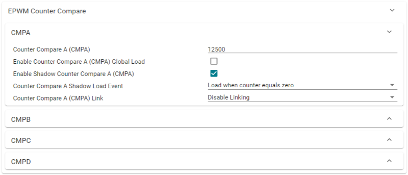
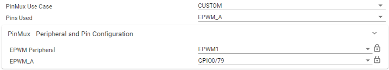
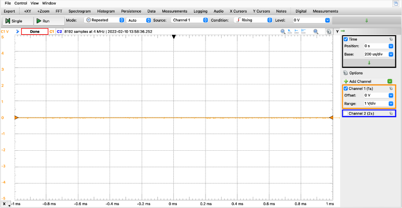

Configurable Logic Block (CLB) Lab#
The objective of this lab is to gain familiarity with the Configurable Logic Block (CLB) peripheral and its submodules through a guided lab example. The scenario in this lab will consist of a pulsing ePWM signal accompanied by an external sensor that is used to halt the ePWM. This demonstration showcases the CLB’s ability to connect to other peripherals, perform logical operations, override peripheral outputs, and generate interrupts to the CPU.
Solution#
All solutions are available
in the directory: <c2000ware_install_path>/training/device/<device_name>.
Introduction#
This lab scenario showcases one use case for the CLB, that being the ability to gate the device’s other peripherals. In this hypothetical system, the sensor acts as a fault detector. In the event that something is amiss, the sensor signals the system to halt operation. The sensor input will rise whenever a fault is detected, gating the ePWM pulse signal. The system will resume operation when the fault is cleared.
To implement this, two external signals—corresponding to the ePWM and the sensor input—will be routed into the CLB through the global input bus. These signals are routed to the LUT submodule, which performs a logical AND operation. The output of this LUT block is then fed into the OUTLUT block corresponding to EPWM1A (in this case, OUTLUT 0). The output of EPWM1A will be overridden with the output of the CLB tile. In addition to this, an interrupt will be generated using the HLC submodule when the sensor input is received. This interrupt will be used to toggle LEDs on the board, giving a visual representation of this system. A block diagram of this implementation is shown below.

Lab Setup#
Hardware Setup#
You will need the following hardware for this lab:
A C2000 controlCARD or LaunchPad with the supplied USB cable.
Jumper cables.
Oscilloscope (optional).
Use the supplied USB cable to connect the USB Micro or USB Mini Type-B connector to the board. Connect the USB Standard Type-A connector into your computer USB port. You should see some LEDs light up on your board. In addition to powering the board, a JTAG communication link is also established between the device and Code Composer Studio. Later in the lab, the sensor GPIO pin will be routed to either GND or 3.3V, so ensure you have a jumper cable. An oscilloscope is optional, but will allow the ePWM output to be viewed through GPIO0.
Software Setup#
The following software will need to be installed on your computer:
Import Empty Project#
Our first task is to import an empty project to our Code Composer Studio (CCS) workspace. The basic instructions are as follows:
Open CCS and go to Project→Import CCS Projects. A new window should appear. Ensure that the Select search-directory option is activated.
Click the Browse button and select the
[C20000ware_Install_dir]/training/device/[device]/empty_labdirectory. Note that the default Windows [C20000ware_Install_dir] isC:/ti/c2000/C2000Ware_4_xx_xx_xx.Under Discovered Projects, you should now see the
lab_[board]_[device]project. Select the appropriate project for either the control card or the launchpad.

Click Finish to import and copy the
lab_[board]_[device]project into your workspace.Rename the project and source files appropriately.
Task 1 - Setting up the GPIOs#
We will begin this lab exercise by configuring the required GPIOs within the
c2000.syscfg file of the project. Double-click the c2000.syscfg file within
the project to open the SysConfig GUI. In total, three GPIOs will be needed for
this lab, and they will serve the following functions:
GPIO name |
Function |
|---|---|
myGPIOSensor |
Simulates sensor for use as an input into the CLB. This GPIO will be externally tied to either GND or 3.3V to indicate the presence of a fault |
LED_EPWM_GPIO |
GPIO tied to LED for visualizing ePWM. When this LED is on, it indicates that the ePWM is actively pulsing |
LED_SENSOR_GPIO |
GPIO tied to sensor input for visualizing sensor. When this LED is on, it indicates that the sensor is detecting a fault |
myGPIOSensor will be configured on GPIO27 as an input for use within the
CLB. When pulled low, the system will function normally, and when pulled high,
myGPIOSensor will signal a fault to the CLB. Within SysConfig, perform the
following steps:
Add a GPIO by clicking the (+) icon next to ‘GPIO’ on the left pane
Set the name of the GPIO as ‘myGPIOSensor’
Set the GPIO as an input
Set the Pin Type as “Push-pull output/floating input”
Now, we have to choose which GPIO we are configuring, in this case GPIO27. Upon expanding the “PinMux” view we can choose the desired GPIO. Follow the steps below:
Click on the three dot icon at the top right of the SysConfig window
Select “Preferences & Actions”
Under preferences, click on the ‘Device Pin Label’ drop down arrow and enable “Device pin name”. This is not part of the default SysConfig settings but allows us to see the pin name along with the pin number
Within the GPIO PinMux, select GPIO27 as the desired GPIO
To be able to use myGPIOSensor as a CLB input, we need to route GPIO27 as an
auxiliary signal (AUXSIG) through the global input bus. This requires using the
input crossbar (INPUTXBAR) and CLB crossbar (CLBXBAR). First, configure the
Input X-BAR to connect GPIO27 to INPUTXBAR1 using the steps below:
Add Input X-BAR by clicking the (+) icon next to ‘INPUTXBAR’ on the left pane
Set the name of the Input X-BAR as ‘myINPUTXBAR1’
Select INPUTXBAR1 as the Input X-BAR instance to be used
Configure INPUTXBAR1 to use GPIO27
If desired, check the box to lock INPUTXBAR1
Next, the CLB X-BAR needs to be configured to route INPUTXBAR1 as an auxiliary
signal into the CLB. Configure the CLB X-BAR to route INPUTXBAR1 to AUXSIG0
using the steps below:
Add a CLB X-BAR instance by clicking the (+) icon next to ‘CLBXBAR’ on the left pane
Set the name of the CLB X-BAR as ‘myCLBXBAR0’
Select AUXSIG0 as the Aux Signal Input
Select MUX 01 as the MUX to be used for this AUXSIG0. MUX 01 is a requirement as it provides a connection to the INPUTXBAR1 signal
In the MUX 1 dropdown, configure INPUTXBAR1 to be used
Now, myGPIOSensor (GPIO27) has been successfully configured as AUXSIG0 on the
global input bus and can be used as an input into the CLB.
Next, we must configure the LED GPIOs to provide a visual representation of the
system. This is done in a similar manner to a regular GPIO input. First
configure LED_EPWM_GPIO using the steps below:
Add an LED by clicking the (+) icon next to ‘LED’ on the left pane
Set the name of this LED as ‘LED_EPWM’
The name of the GPIO will automatically populate to ‘LED_EPWM_GPIO’
Set the Pin Type as “Push-pull output/floating input”
Check the box to enable a write of an initial value
Set the initial value as “0: GPIO state is LOW”
This will initialize ‘LED_EPWM’ to be on when the system begins running
Within the GPIO PinMux, select the GPIO according to the following table
Device |
LaunchPad |
controlCARD |
|---|---|---|
F28379D |
31 |
31 |
F2838x |
n/a |
31 |
F28004x |
23 |
31 |
F28002x |
31 |
31 |
F28003x |
20 |
31 |
Similarly, configure LED_SENSOR_GPIO using the steps below:
Add an LED by clicking the (+) icon next to ‘LED’ on the left pane
Set the name of this LED as ‘LED_SENSOR’
The name of the GPIO will automatically populate to ‘LED_SENSOR_GPIO’
Set the Pin Type as “Push-pull output/floating input”
Check the box to enable a write of an initial value
Set the initial value as “1: GPIO state is HIGH”
This will initialize ‘LED_SENSOR’ to be off when the system begins running
Within the GPIO PinMux, select the GPIO according to the following table
Device |
LaunchPad |
controlCARD |
|---|---|---|
F28379D |
34 |
34 |
F2838x |
n/a |
34 |
F28004x |
34 |
34 |
F28002x |
34 |
34 |
F28003x |
22 |
34 |
Task 2 - Initialize the EPWM Module#
The EPWM module will be used to represent the system and is configured to be a 2kHz PWM waveform with a 50% duty cycle on ePWM1A. For more information on the PWM, please review the Control Peripherals module.
We will start by adding a PWM instance within Sysconfig by clicking on the (+) sign next to ‘EPWM’ within the left pane of Sysconfig. Name this EPWM instance ‘myEPWM1’. Now that we have added an EPWM instance, we will configure the EPWM1 ‘Timebase’ submodule as follows:
Set High Speed Clock Divider to ‘Divide clock by 1’
Set Time Base Period to ‘25000’
Set Counter Mode to ‘Up - down - count mode’

The ‘Counter Compare’ submodule for EPWM1A will be as follows:
Set Counter Compare A (CMPA) to ‘12500’

Now, configure the ‘Action Qualifier’ submodule for EPWM1A as follows:
Enable Shadow Mode
Set Shadow Load Event to ‘Load when counter equals zero’
In Events to Configure for ePWMxA output, select ‘Time base counter up equals COMPA’ and ‘Time base counter down equals COMPA’
Set Time base counter up equals COMPA to ‘Set output pins to High’
Set Time base counter down equals COMPA to ‘Set output pins to Low’

Lastly, we need to configure the PinMux for EPWM1A. Even though the output of ePWM1A will be overridden by the output of the CLB, configuring the output GPIO is good practice as it allows us to view the pure ePWM1A pulse for debugging purposes. Follow the steps below:
Select ‘CUSTOM’ on the EPWM1 PinMux. This allows us to select only EPWM_A as an output
Configure the Pin as ‘EPWM_A’
Set the EPWM Peripheral to be used as ‘EPWM1’
Configure the ‘EPWM_A’ pin to be ‘GPIO0’

Task 3 - Setup the CLB#
To setup the CLB peripheral, we need to add a CLB instance within SysConfig. We will need to setup this CLB instance to use the EPWM1A signal and sensor signals as inputs. We must also attach an interrupt handler to this CLB instance so that the HLC can issue interrupts to the CPU. Setup CLB1 by following the steps below:
Add a CLB by clicking the (+) icon next to ‘CLB’ on the left pane
Set the name of this CLB as ‘myCLB1’
Set the CLB Instance to be ‘CLB1’
Select ‘Output 0’ as the output to be overridden
‘Output 0’ is muxed with EPWM1A in the Peripheral Signal Mux. Choosing this option overrides the EPWM1A output with Output 0 from CLB1. Refer to the Peripheral Signal Multiplexer Table within the device’s TRM for more information.
Select ‘Input 0’ and ‘Input 1’ as inputs into CLB1
Now we can configure the inputs into CLB1. The EPWM1A signal is directly available on the global input bus without the need for any X-BARs. To bring in this signal, configure Input 0 as follows:
Set the Input type as ‘Use Global Mux’
Under the dropdown for Global Mux Input, select ‘EPWM1A’
No syncing, input syncing, or initial GPREG writes are necessary

Next, we will route the sensor input into Input 1 of CLB1. Recall previously that ‘myGPIOSensor’ was connected to AUXSIG0 through the Input X-BAR and CLB X-BAR. Doing this allows us to select AUXSIG0 as an input into CLB1. Configure Input 1 as follows:
Set the Input type as ‘Use Global Mux’
Under the dropdown for Global Mux Input, select ‘CLB X-BAR AUXSIG0’
No syncing, input syncing, or initial GPREG writes are necessary

Because the HLC submodule within CLB1 will be issuing interrupts to the CPU when a fault is detected, an Interrupt Handler must be configured. Follow the steps below to do this:
Check the box next to ‘Register Interrupt Handler’
Rename the Interrupt Handler function as desired
Check the box next to ‘Enable Interrupt in PIE’

Task 4 - Configure the CLB Tile#
Now it is time to configure the CLB1 tile to perform the logic necessary to have the sensor input gate EPWM1A. This requires configuring three kinds of submodules within the CLB: LUT, OUTLUT, and the HLC.
Navigate to the ‘TILE’ peripheral within the SysConfig GUI and add a single TILE instance. Begin the CLB tile configuration by editing LUT_1. LUT_1 will be responsible for handling the combinatorial logic that gates the EPWM1A pulse signal. Configure LUT_1 as follows:
Select ‘BOUNDARY.in0’ as the input for i0. This corresponds to the PWM signal
Select ‘BOUNDARY.in1’ as the input for i1. This corresponds to the sensor input
In the equation field, enter the following logical expression:
i0 & !i1With this logic, the output of LUT_1 will be the PWM signal when i1 is low. The output will be low when i1 is high.
LUT_2 will be responsible for simulating the falling edge of the sensor input. The output of this LUT will be used as an event trigger by the HLC so that we can toggle the LEDs when the fault is resolved. Configure LUT_2 as follows:
Select ‘BOUNDARY.in1’ as the input for i0. This corresponds to the sensor input
In the equation field, enter the following logical expression:
!i0

Next, we must configure OUTLUT_0 to bring the output of LUT_1 outside of the CLB. OUTLUT_0 corresponds to BOUNDARY.out0 of CLB1 and will override the output of EPWM1A. Configure OUTLUT_0 as follows:
Select ‘LUT_1.OUT’ as the input for i0. This corresponds to the output of the LUT_1 block
In the equation field, enter the following logical expression:
i0
Finally, the High-Level Controller is configured with two events.
Event 0 is triggered by the rising edge of the sensor input and will issue an interrupt to the CPU to toggle off the EPWM LED and toggle on the sensor LED.
Event 1 is triggered by the falling edge of the sensor input and will issue an interrupt to the CPU to toggle on the EPWM LED and toggle off the sensor LED.
Configure the HLC as follows:
Select ‘BOUNDARY.in1’ as the trigger condition for Event 0
Select ‘LUT_2.OUT’ as the trigger condition for Event 1
In the instruct0 field of program0, enter the following operation:
INTR 1In the instruct0 field of program1, enter the following operation:
INTR 2
Task 5 - Setup the CLB ISR#
Now that we have configured the CLB and PWM modules within SysConfig, we can switch to the application code portion of this lab. Within the project click on the .c file under the name you chose.
Within the .c file, we need to write the code that will be executed everytime there is a CLB interrupt, otherwise known as ISR (interrupt service routine).
Because the CLB uses multiple event interrupts, the first part of the ISR
requires grabbing the interrupt tag from the CLB. This is stored in the tag
variable.
Note: The name of the ISR function is what we defined earlier within the SysConfig configuration for the CLB.
__interrupt void INT_myCLB1_ISR(void)
{
// Get interrupt tag upon HLC interrupt
tag = CLB_getInterruptTag(myCLB1_BASE);
The next portion of the ISR function involves deciphering the interrupt tag and
toggling the LEDs depending on what tag is received by the CPU. If tag
matches the interrupt tag sent by Event 0 (rising edge of sensor input), the
CPU will turn off the EPWM LED and turn on the sensor LED. Instead, if tag
matches the interrupt tag sent by Event 1 (falling edge of sensor input), the
CPU will turn on the EPWM LED and turn off the sensor LED.
// Turn off EPWM LED and turn on SENSOR LED
if (tag == SENSOR_HIGH_INT_TAG)
{
GPIO_writePin(LED_EPWM_GPIO, 1);
GPIO_writePin(LED_SENSOR_GPIO, 0);
}
// Turn on EPWM LED and turn off SENSOR LED
if (tag == SENSOR_LOW_INT_TAG)
{
GPIO_writePin(LED_EPWM_GPIO, 0);
GPIO_writePin(LED_SENSOR_GPIO, 1);
}
Lastly, we must acknowledge the PIE group as well as clear the interrupt status flag so that we can continue to service interrupts in the future.
CLB_clearInterruptTag(myCLB1_BASE);
Interrupt_clearACKGroup(INTERRUPT_ACK_GROUP5);
}
Task 6 - Setup the .c file#
The last thing we have to do is define any variables we are using throughout the project and setup the content within the main() function, which includes device initialization.
We begin by including the basic necessary libraries driverlib.h and device. h. Next, include the SysConfig-generated header file board.h. This should
already be included by default. Lastly, include the clb_config.h and clb.h
libraries, which are required for proper CLB function. These two CLB libraries
are included by default if the clb_empty project was imported.
//
// Included Files
//
#include "driverlib.h"
#include "device.h"
#include "board.h"
#include "clb_config.h"
#include "clb.h"
Then we define the two interrupt tags, SENSOR_HIGH_INT_TAG and
SENSOR_LOW_INT_TAG, which will be issued by the HLC.
//
// Global variables and definitions
//
#define SENSOR_HIGH_INT_TAG 1
#define SENSOR_LOW_INT_TAG 2
uint16_t tag;
Lastly, we define the contents within main() which includes device initialization and peripheral setup:
void main(void)
{
// CPU Initialization
Device_init();
Device_initGPIO();
Interrupt_initModule();
Interrupt_initVectorTable();
// Configure the GPIOs/XBARs/PWM/CLB/LEDs through
// SysConfig-generated function found within board.c
Board_init();
// Initialize and enable the CLB1 tile
initTILE1(myCLB1_BASE);
CLB_enableCLB(myCLB1_BASE);
// Enable global interrupts and real-time debug
EINT;
ERTM;
// Main Loop
while(1)
{
asm(" NOP");
}
}
This concludes the coding portion of this lab.
Running the Lab#
Build and Run Interactive Debug Session#
Ensure that the USB cable from your LaunchPad or controlCARD is connected to your computer. If you have a LaunchPad, right click on your project in the project explorer pane and click Properties→Build→C2000 Compiler→Predefined Symbols, add
_LAUNCHXL_F28XXXXXas a predefined symbol according to yourdevice.hheader file. Thedevice.hfile can be found in the<projectroot>/device/directory.Under the Build button, activate the CPU1_RAM build configuration. Use the CPU1_LAUNCHXL_RAM build configuration if it is available and if you are using a LaunchPad. Build the program and fix any compilation errors.
Create a new debug configuration. Set the target configuration to be
${workspace_loc:/<projectroot>/targetConfigs/TMS320F28XXXXX_LaunchPad.ccxml}if using a LaunchPad, else, use${workspace_loc:/<projectroot>/targetConfigs/TMS320F28XXXXX.ccxml}. Select the current project to be loaded to CPU1. Press Apply and close the window.Prior to running the lab, ensure that a jumper cable is connected between the GPIO27 pin and a GND header. - Refer to the following table for the location of GPIO27 on your device
Device |
LaunchPad |
controlCARD |
|---|---|---|
F28379D |
J6-52 |
Header-81 |
F2838x |
n/a |
Header-81 |
F28004x |
J6-59 |
Header-81 |
F28002x |
J2-11 |
Header-81 |
F28003x |
J5-59 |
Header-81 |
Now we will start the debug session. Under the debug button, start the debug session using the new configuration. You should now see the debugging session open up and the debugger should have reached
main().Click the Resume button.
Observe the Lab#
For this lab, there are three methods to monitor the activity of the CLB and ePWM. Observing the system using a combination of all three methods is recommended to develop the best understanding from this lab.
Method 1: Monitor the PWM waveform output through GPIO0 using an oscilloscope.
Refer to the following table for the location of GPIO0 on your device.
Device |
LaunchPad |
controlCARD |
|---|---|---|
F28379D |
J4-40 |
Header-49 |
F2838x |
n/a |
Header-49 |
F28004x |
J8-80 |
Header-49 |
F28002x |
J4-40 |
Header-49 |
F28003x |
J4-40 |
Header-49 |
Method 2: Monitor the configured LEDs on the LaunchPad/controlCARD.
Method 3: Monitor the ‘tag’ variable under the ‘Expressions’ tab within CCS.
When running the lab, observe the initial state of the system. A PWM waveform should be present on the oscilloscope, the EPWM LED should be on, the sensor LED should be off, and the
tagvariable displays a 2.
Now that the initial system has been verified, simulate the situation where the sensor detects a fault. To do this, remove the end of the jumper cable attached to the GND pin and attach it to a 3.3V header. This will simulate the rising edge of the sensor input.
Observe what happens to the system when this is done. The oscilloscope screen should now display a flat line at 0V, as opposed to a waveform. On the board, the EPWM LED should now be turned off and the sensor LED should be on. The
tagvariable in the Expressions tab should display a 1, indicating that the rising edge of the sensor input was received. These observations successfully showcase that the CLB was able to gate the ePWM signal using the sensor input.

Now, simulate the scenario where the fault has been resolved and the PWM pulse should resume functioning. To do this, disconnect the jumper cable from 3. 3V and return it to GND. The system should begin running as initially. That is, a PWM signal should be present on the oscilloscope screen, the EPWM LED should be on, and the
tagvariable should display 2, indicating that the falling edge of the sensor input was received.
Terminate the debug session and close the project. This concludes the lab assignment.
Additional Practice#
Try It Yourself!
Test your CLB knowledge by expanding on the scenario described in this lab. Instead of having the sensor input gate the ePWM signal only when the sensor is high, adjust the logic within the CLB so that the ePWM shuts off completely upon receiving the sensor input. Ensure that the ePWM does not resume pulsing when the sensor input goes low.
Hint 1
This new scenario makes use of a Finite-State Machine (FSM) submodule in addition to the LUT4 submodule.
Hint 2
Configure the FSM as a 2-state 1-input finite-state machine. If needed, create a state table and use a Karnuagh Map to assist in creating the state equations. A state transition occurs only when the ePWM is running and the sensor input rises. Any other combination of state and input leave the pulse unaffected.
Hint 3
Reconfigure input1 of the LUT4 to use the output state of the FSM instead of the CLB’s BOUNDARY input.
Solution
To correctly implement this new CLB scenario, it will be helpful to make use of the finite-state machine (FSM) submodule. With the FSM block, we can create state-based logic to simulate the sensor input shutting down the system.
The first step is to define the logic that will be used by the FSM to implement this scenario. This new implementation only requires two states (a pulsing state and a shutdown state) and a single sensor input. The FSM will be modeled after the following state diagram:
To begin, construct a truth table describing the logic and state transitions that result from the sensor input. The values of the states will be 0 and 1 corresponding to “ePWM on” and “ePWM off”, respectively. To simplify the logic, the FSM output will correspond directly with the value of the current state. This means that the FSM will function similarly to the LUT in that a state output of 0 will correspond to a pulsing EPWM and a state output of 1 will correspond to a gated PWM signal. The finished truth table should look similar to this:
Current State |
Input |
Next State |
Output |
|---|
0 | 0 | 0 | 0
0 | 1 | 1 | 0
0 | 0 | 1 | 1
0 | 1 | 1 | 1
The state and output equations can be derived either through analysis or with a K-map. Notice that the Next State represents a single OR operation on the Current State and Input fields. The Output equation corresponds directly with the Current State field. Thus, the necessary logic equations are:
Next State = (Current State) | (Input)
Output = Current State
Now, configure FSM_0 with the derived logic equations.
Select ‘BOUNDARY.in1’ as the input for e0. This corresponds to the sensor input
In the s0 state equation field (eqn_s0), enter the following logical expression:
s0 | e0In the output equation field (eqn_out), enter the following logical expression:
s0
Now, that the FSM has been configured, reconfigure LUT_1 to use this signal as opposed to the sensor input signal. In LUT_1, do the following:
Select ‘FSM_0.OUT’ as the input for i1.
LUT_2 and HLC event 2 were used to represent the falling edge of the sensor input. Since the falling edge is no longer being considered, reset the configuration for LUT_2 and HLC event 2. Also, remove the logic within the interrupt handler that corresponds to the falling edge of the sensor input.
Like in the original implementation, setup a debug session in CCS and observe the lab on your device. Notice that when GPIO27 is brought high, the PWM pulse remains off, even when the sensor signal falls.
Full Solution#
The full solution to this lab exercise is included as part of the C2000Ware
SDK. Import the project from
<c2000ware_install_path>/training/device/<device_name>/advance_topics/lab_clb.
Feedback
Please provide any feedback you may have about the content within C2000 Academy to: c2000_academy_feedback@list.ti.com